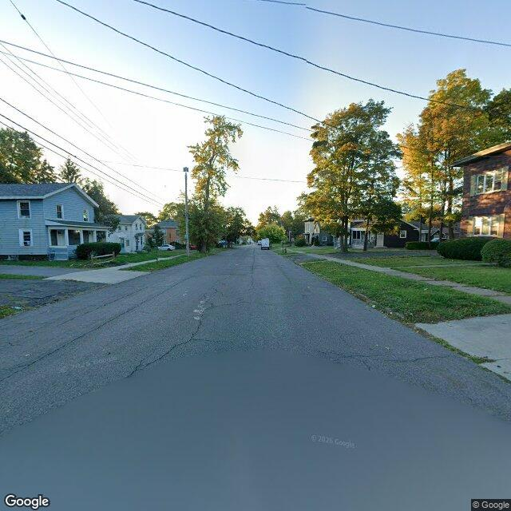

street cracks sidewalk utility pole
Heading 299°
Northwest street view
A residential street scene with cracked asphalt pavement, concrete sidewalks, mature trees, curbs, a utility pole, overhead lines, and a street light.
Street quality: 2/5Sidewalk quality: 3/54 issue boxes8 objects
Open exported records